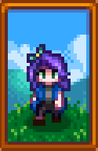
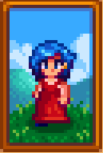
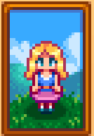
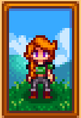
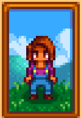
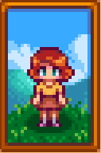

Meet The Bachelorettes!
They can be married after 10 hearts together, choose wisely!

Abigail, the resident gamer girl with a love of exploring the abandoned mines.
Catch her in the graveyard or at the General Store with Caroline and Pierre, her parents.
Loved gifts include:
Amethyst, Banana Pudding,
Blackberry Cobbler, Chocolate Cake, The "Monster Compendium",
Pufferfish, Pumpkin and Spicy Eel.
Gift her Chocolate Cake on Fall 13.

Emily, the nicest crystal girl you'll ever meet.
Find her sewing at 2 Willow Lane with her sister Haley.
Loved gifts include:
Amethyst, Aquamarine, Cloth, Emerald,
Jade, Parrot Egg, Ruby, Survival Burger, Topaz and Wool.
Bring her a crystal on Spring 27!

Haley is the town beauty queen with a hidden passion for photography.
Find her in her dark room at 2 Willow Lane with her sister Emily.
Loved gifts include:
Coconut, Fruit Salad, Pink Cake and Sunflower.
She has her cake walk on Spring 14.

Leah has a talent for sculpture and foraging for wild foods.
Her cottage in the woods is the perfect studio for her.
Loved gifts include:
Goat Cheese, Poppyseed Muffin, Salad,
Stir Fry, Truffle, Vegetable Medley and Wine.
Open that wine on Winter 23!

Meet Maru. Nurse and assistant to Harvey by day, tech genius by night.
She lives at 24 Mountain Road with her father Demetrius,
half-brother Sebastian and her stepmother Robin.
Loved gifts include:
Battery PAck, Cauliflower, Cheese Cauliflower, Diamond, Dwarf Gadget,
Gold & Iridium Bar, Miner's Treat, Pepper Poppers, Rhubarb Pie and Strawberry.
Deliver a Radioactive Bar on Summer 10 for her birthday!

Meet Penny, the town teacher. She can't cook but she can't wait to settle down.
She lives in a trailer with her mother Pam.
Loved gifts include:
Books, Diamond, Emerald, Melon, Poppy, Poppyseed Muffin,
Red Plate, Roots Platter, Sandfish and Tom Kha Soup.
Spoil her on Fall 2.